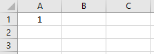
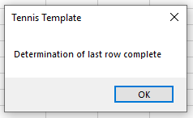
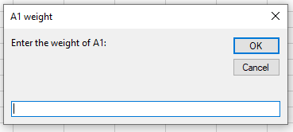

Range("A1").value = 1
Cells(1,1).Value = 1The first number in the brackets (before the comma) refers to the row, while the second number refers to the column.
Range("A1:C1").Value = 1image-20211221144041760
Range(Cells(1,1),Cells(1,3)).Value = 1image-20211221144041760
Cells(1,1) refers to the cell with row 1 column 1, which is A1. Cells(1,3) refers to the cell with row 1 column 3, which is C1. By placing them within the range function, separated by a comma, it is read as: Range A1:C1. Using the cells format, whereby the cell is referred to by expressing the row number and column number (e.g. cell(1,3)) might read more difficult than simply expressing the cell address (e.g. C1), but the cell format is very useful when looping (to be discussed in Chapter 8).
Range("A1").Value = "Federer"image-20211221144116675
Note how you need to place a string in quotation marks, while it is not required for a number.
Use the workbook provided and complete the form provided by entering your details in the provided blue areas, using VBA. Code your questions to all the below questions within one macro in the VB Editor. Rerun your macro after completing each question, to make sure your macro works correctly. Refer to the cell address by using “range”. Thereafter, reperform all the below questions in a new macro, by referring to the cell addresses by using “cells”.
Q1: Enter your name in cell B1. Q2: Enter your surname in cell B2. Q3: Enter your year of birth in cell B3. Q4: Enter your age in cell B4. Q5: Calculate the current year in cell B6, by adding your year of birth (B3) to your age (B4). Q6: Assign all cells in the range C9:E11 equal to the value of 420.
Variables are placeholders in which values or ranges can be stored. First, the variable needs to be declared. Next, a value should be assigned to that variable. Thereafter, the variable can be used throughout the code by referring to the name of that variable, which holds the value originally assigned to it.
Dim apple as Integer
apple = 20
Range("A1").Value = appleimage-20211221144136398
In the 1st line, we declare a variable. When declaring a variable, we start with the word “Dim”. We give the variable the name “apple”. It is also important to instruct the VB editor what type of variable you want to create. In this instance, we create an integer. Variable types that exist are:
If we try to declare a variable as type integer, and assign it the value of 50 000, it would not work. If we know our numbers are going to be large, we would need to declare a variable as type double. You might be wondering: why don’t we then just always use double in stead of integer? The reason is that a double takes up more computer memory than an integer, which would make your code unnecessarily slower, if you are working with small numbers.
In the 2nd line, we assign the variable named “apple” equal to the value of 20.
In the 3rd line, we assign cell A3 equal to the value of “apple”. As apple has the value of 20, as assigned in the previous step, cell A20 will hold the value of 20.
Note that it is possible to change the value of a variable in a later stage of the code:
Dim apple as Integer
apple = 20
Range("A1").Value = apple
apple = 30
Range("B1").Value = appleimage-20211221144201021
In the 4th line, we reassign the variable named “apple” equal to a new value of 30. Note that it was not necessary to redeclare the variable. We only declare the variable once in our code initially. Also note that despite the variable “apple” having changed value, and we originally set cell A1 equal to the value of “apple”, the value of cell A1 did not accordingly adjust to the new value of “apple” afterwards. Code will always execute looking forward and not readjust previously assigned values.
In the 5th line, we assign cell B1 equal to the value of “apple”. As the variable “apple” now has a new value of 30, cell B1 is assigned the value of 30.
It is also increment a variable with a certain value as follows:
Dim apple as Integer
apple = 20
Range("A1").Value = apple
apple = apple + 10
Range("B1").Value = appleIn the 4th line, we increment the value of the apple variable with 10. The line says: Apple should now equal the value of what apple currently is (before the execution of this 4th line), plus 10. As apple is currently 20, and we now add 10 to it, apple will, after this line has been executed, become 30. Cell B1 will therefore be assigned a value of 30.
Dim banana as Integer
banana = Range("A1").Value
Range("B1").Value = bananaimage-20211221144222888
In the 1st line, we declare a variable named “banana” as type integer. In the 2nd line we assign the variable “banana” equal to the value as found in cell A1. As cell A1 contains the value of 8, “banana” is assigned equal to the value of 8. In the 3rd line we assign cell B1 equal to the value of “banana”. As the value of “banana” is 8, cell B1 is assigned equal to the value of 8.
Dim cherry as Integer
cherry = 3
Cells(1,cherry).Value = 1image-20211221144237571
In the 1st line, we declare a variable named “cherry” as type integer. In the 2nd line, we assign “cherry” equal to a value of 3. In the third line, we assign the cell which has a row of “1” and a column of “cherry” equal to the value of 1. As “cherry” has the value of 3, we assign the cell which has a row of 1 and a column of 3 equal to the value of 1. Row 1 with column 3 gives as cell C1, so we assign cell C1 equal to the value of 1.
Dim donut as integer
donut = 1
Range(cells(1,donut),cells(1,donut+2)).Value = 5image-20211221144255368
In the 1st line, we declare a variable named “donut” as type integer. In the 2nd line, we assign “donut” equal to a value of 1. In the third line, we assign a certain range equal to the value of 5. This range is from a certain cell to another cell. The first cell is the cell with a row of 1 and a column of “donut”. As donut is equal to 1, this first cell is the cell with row 1 and column 1, i.e. A1. The second cell is the cell with a row of 1 and a column of [donut+2]. As donut is equal to 1, it is a column of [1+2], therefore 3. Therefore this second cell is the cell with a row of 1 and a column of 3, i.e. C1. The range is therefore from A1 to C1. We assign this range equal to a value of 5.
Use the workbook provided and complete the form provided by entering your details in the provided blue areas, using VBA within one macro. Rerun the macro after each question to test accuracy.
Q1: Declare a variable named ‘nameSurname’. Assign it a value equal to your name and surname. Set the value of cell B1 equal to the value of that variable.
Q2: Declare a variable named ‘yearBirth’. Assign it a value equal to your year of birth. Set the value of cell B2 equal to the value of that variable.
Q3: Declare a variable named ‘age’. Assign it a value equal to the value as found in cell F1. Set the value of cell B3 equal to the value of that variable.
Q4: Create a macro button for your macro created thus far.
Q5: Change the value in cell F1 to your actual age, using manual traditional Excel (no VBA).
Q6: Rerun the macro created in Q3, by pressing the button created in Q4. Did the value in cell B3 change to your actual age? If not, you did not do Q3 correctly. Make sure you did not “hard code” the age into your formula by expressing it directly, but rather expressed that the age should equal whatever value is found in cell F1.
Q7: Declare a variable named ‘idNumber’. Assign it a value equal to your ID number. Set the value of cell B4 equal to the value that variable.
Q8: Declare a variable named ‘currentYear’. Assign it a value equal to the ‘yearBirth’ variable plus the ‘age’ variable. Set the value of cell B6 equal to the value of the ‘cuurentYear’ variable.
Q9: Increment the ‘age’ variable with 5. Rerun the macro. Nothing will change on the sheet. The answer obtained in Q8 for cell B6 would not change, despite referencing the ‘age’ variable, as we only changed the value of the variable after that line of code.
Q10: Set the value of ‘currentYear’ once again equal to the ‘yearBirth’ variable plus the ‘age’ variable again. Set the value of cell B6 equal to the value of that variable. Running the macro again should now change the value in cell B6 by incrementing it with 5, as the ‘age’ variable, which is used to calculate the ‘currentYear’ value, has incremented with 5 in the previous line of code.
Q11: Declare a variable named ‘i’. Set it equal to the value as found in cell B10. Then declare a variable named ‘j’ and set it equal to the value as found in cell B11. Then set the value of the cell with the row of i and column j equal to the text value “Federer” (in the VB Editor).
Q12: Change the values in cells B10 and B11 to any numbers of your liking, using manual traditional Excel (no VBA).
Q13: Rerun the macro in which your code for Q11 was placed. In which cell did the word “Federer” now appear? Did the word “Federer” still appear in cell D17 as well, or did the contents in cell D17 disappear? Why/why not?
If Range("A1").Value >= 50 Then
Range("B1").Value = "Passed"
End Ifimage-20211221144314500
image-20211221144334824
In the 1st line, we test whether the value as found in cell A1 is larger (or equal) than 50. If this condition is met, then cell B1 should be assigned the value of “Passed” (remember that strings should be placed in quotations). It is then important to remember to close the If statement with the expression “End If”. In the first screenshot, the condition is met, and therefore B1 is assigned the value “Passed”. In the second screenshot, the condition is not met, and the compiler simply skips the line of code after the “then” statement. Cell B1 is therefore not assigned the value of “Passed”.
If Range("A1").Value >= 50 Then
Range("B1").Value = "Passed"
Else
Range("B1").Value = "Failed"
End Ifimage-20211221144314500
image-20211221144355635
In this example, we instruct the compiler to do something else when a condition is not met. In the 1st line, we test whether the value as found in cell A1 is larger (or equal) than 50. If this condition is met, then cell B1 should be assigned the value of “Passed”. If the condition is not met (in other words, the value is smaller than 50), then cell B1 should be assigned the value of “Failed”. In the first screenshot, the condition is met, and therefore B1 is assigned the value “Passed”. In the second screenshot, the condition is not met, as 30 is lower than 50, and therefore B1 is assigned the value “Failed”.
If Range("A1").Value >=50 And Range("B1").Value >=50 Then
Range("C1").Value = "Passed"
Else
Range("C1").Value = "Failed"
End Ifimage-20211221144455017
image-20211221144521172
In the above example, two conditions need to be met in order for a certain action to execute. Firstly, the value as found in cell A1 should be larger (or equal) than 50. Secondly, the value as found in cell B1 should be larger (or equal) than 50. Only if both conditions are met, cell C1 should be assigned the value of “Passed”. Otherwise, cell C1 should be assigned the value of “Failed”. In the first screenshot, both numbers are larger than 50, and therefore cell C1 displays “Passed”. In the second screenshot, only one of the conditions is met, i.e. the value as found in cell A1 is larger than 50, but not the value as found in cell B1. As the And-function requires both conditions to be met, the word “Failed” would rather be displayed in cell C1.
If Range("A1").Value >=50 Or Range("B1").Value >=50 Then
Range("C1").Value = "Passed"
Else
Range("C1").Value = "Failed"
End Ifimage-20211221144535135
image-20211221144549588
In the above example, either of the two conditions need to be met in order for a certain action to execute. Either the value as found in cell A1 should be larger (or equal) than 50, or the value as found in cell B1 should be larger (or equal) than 50. As long as one of these conditions are met, cell C1 should be assigned the value of “Passed”. Otherwise, cell C1 should be assigned the value of “Failed”. In the first screenshot, both numbers are smaller than 50, and therefore cell C1 displays “Failed”, as neither conditions were met. In the second screenshot, one of the conditions is met, i.e. the value as found in cell A1 is larger than 50, but not the value as found in cell B1. As the Or-function only requires one of the stated conditions to be met, the word “Passed” is displayed in Cell C1.
Use the workbook provided and code your questions to all the below questions within one macro in the VB Editor. Rerun your macro after completing each question, to make sure your macro works correctly.
Q1: Enter a body temperature in cell C1, using manual traditional Excel (no VBA). Using VBA, write code that would display the message “Covid warning” in cell C2 if the temperature entered in cell C1 is above 37,5 degrees Celsius.
Q2: Enter an age in cell C4, using manual traditional Excel (no VBA). Using VBA, write code that would display the message “You may enter” in cell C5 if the age entered in cell C4 is 18 or above. Otherwise, the message “You may not enter” should appear.
Q3: Enter a cricket batting average (usually between 10 and 50) in cell C17 and a batting strike rate (usually between 70 and 120) in cell C8, using manual traditional Excel (no VBA). Batsmen are picked for the cricket team if both of the following conditions are met: their batting average should be 40 or higher, and their batting strike rate should be 80 or higher. Write Using VBA, write code that would display the message “Yes” in cell C9 if the batsmen should be picked for the team. The message “No” should appear if the batsmen should not be picked for the team.
Q4: Enter a cricket bowling average (usually between 20 and 40) in cell C11 and a bowling strike rate (usually between 40 and 60) in cell C12, using manual traditional Excel (no VBA). Bowlers are picked for the cricket team if either of the following conditions are met: their bowling average should be 30 or lower, or their bowling strike rate should be 50 or lower. Write Using VBA, write code that would display the message “Yes” in cell C13 if the bowler should be picked for the team. The message “No” should appear if the bowler should not be picked for the team.
You can change your values in the blue input cells and rerun your macro to make sure that your macro correctly caters for all possible scenarios.
Range("A1").Copy Range("C1")image-20211221144626765
In the above example, we copied the content of a cell and pasted it into another cell. Note how we did not explicitly coded the paste function. The VB Editor will paste the selection copied to the range expressed after the copy function.
Range("A1:B2").Copy Range("D1")image-20211221144643850
In the above example, we copied the the content as found in a range, and pasted it to another area. Note how we instructed the VB editor were to start pasting the range copied (D1).
It is also possible to select the whole range by referring to the current region:
Range("A1").CurrentRegion.Copy Range("D1")image-20211221144648185
The “Current Region” function in VBA is equivalent to pressing “Ctrl+A” to select the whole area in standard Excel.
Use the workbook provided and code your questions to all the below questions within one macro in the VB Editor. Rerun your macro after completing each question, to make sure your macro works correctly.
Q1: Copy the contents of cell A4 and paste it to cell C6. Q2: Copy the contents of the range A12:B15 and paste it to E15:G18
Being able to determine the last row of a database is a vital tool in Excel VBA. The reason why it is useful will become clear in chapter 7. In Chapter 5 we will solely on how to determine the last row.
Dim lastrow as Integer
lastrow = cells(1,1).End(xlDown).row
Range("D1").Value = lastrowimage-20211221144721915
We declare a variable with the name “lastrow” as type integer. We then assign it a value calculated as follows: first we start at the cell with row 1 and column 1, which is cell A1. The “End(xlDown)” part instructs the compiler to move to down to the last row in the selection that contains data. This is equivalent in pressing “Ctrl+↓” in standard Excel. After this we are standing at cell A6. “.row” instructs the compiler to determine the row of that cell, which is 6. The variable lastrow is therefore assigned the value of 6. We then assigned cell D1 equal to the value of lastrow, which is 6.
Although the code was able to correctly determine the last row, this method is not recommended, as it will not work if there are gaps in the database. For example:
Dim lastrow as Integer
lastrow = cells(1,1).End(xlDown).row
Range("D1").Value = lastrowimage-20211221144747042
We declare a variable with the name “lastrow” as type integer. We then assign it a value calculated as follows: first we start at the cell with row 1 and column 1, which is cell A1. The “End(xlDown)” part instructs the compiler to move to down to the last row in the selection that contains data. After this we are standing at cell A3. “.row” instructs the compiler to determine the row of that cell, which is 3. The variable lastrow is therefore assigned the value of 3. This is incorrect, as the last row of the database is in fact 7. This method of determining the last row did not work, as there was an empty cell (A4) within our database.
Dim lastrow as Integer
lastrow = cells(rows.count,1).End(xlUp).row
Range("D1").value = lastrowimage-20211221144810825
We declare a variable with the name “lastrow” as type integer. We then assign it a value calculated as follows: first we start at a cell. “rows.count” will count the total rows that the sheet contains, which will always be 1048576. So we start with a cell that has row 1048576 and column 1. This gives us cell A1048576. The “End(xlUp)” part instructs the compiler to move to up to the first row that contains data. This is equivalent in pressing “Ctrl+↑” in standard Excel. After this we are standing at cell A7. “.row” instructs the compiler to determine the row of that cell, which is 7. The variable lastrow is therefore assigned the value of 7. We then assigned cell D1 equal to the value of lastrow, which is 7.
This method is recommended, as it will always work, regardless of whether your database contains empty cells.
Use the workbook provided and declare a variable named “lastrow” and assign it a value equal to the lastrow of the database given. Assign cell G1 equal to the value of the ‘lastrow’ variable.
A message box can increase the user friendliness of a macro, by giving information to the user after certain code has been executed. An example would be to tell the user that the macro has been successfully executed. This is done as follows:
VBA.MsgBox "Determination of last row complete"The above code will generate the following message box:

The first component in the MsgBox function is the actual message that should be displayed. There are other optional arguments t
An input box enables you to create a message box in which the user can input information. It is useful to then store this information as a variable, and use it further in your code.
Dim a1weight As Integer
a1weight = InputBox("Enter the weight of A1:")
When you need to obtain a lot of information from the user, it might be better to make use of a user form, rather than several separate input boxes. A user form looks like this:
image-20220317154436343
How to create a user form falls outside the scope of this textbook.
You are provided with a dataset containing a list of individuals, containing their name, year of birth and age. A button, for which no macro has yet been written, is also provided. When the button is pressed, a message should appear, asking the user for his/her name. After the user inputted a name and clicked OK, a new message should appear, asking the user for his/her year of birth. After the user inputted a number and clicked OK, the compiler should add an entry to the dataset (tip: determine the last row as done in Chapter 5, and add one to that variable to determine in which row the entry should be added), containing the name, year of birth and the age in 2022 (which it should calculate). A message should then appear, informing the user that the entry has been successfully added.
You often might be working in different worksheets within a workbook. In such instances, it is vital to instruct the VB Editor to which sheet you are referring, when referring to cells.
Range("A36").Value = 10image-20211221162121108
In the above example, we want to assign the value of 10 to cell A36. But to which sheet? The VB Editor will by default use the sheet that it currently active. However, when working with several sheets, it is always good practice to explicitly express the sheet that should be used, which is done as follows:
Worksheets("January").Range("A36").Value = 10It is then also possible to write to different sheets within one formula:
Worksheets("February").Range("C36").Value = Worksheets("January").Range("A36").Value + 2image-20211221162219836
It is also possible to assign worksheets to variables, which makes it easier to code when used frequently:
Dim janWs as Worksheet
Set janWs = Worksheets("January")
janWs.Range("A35").Value = 10
janWs.Range("A36").Value = 12
JanWs.Range("A37").Value = 14image-20211221162304996
Note in the above example that when assigning a value to a variable which is of type “Worksheet”, it should be preceded with the word “Set”.
In this example, we are going to work with 3 worksheets within one workbook:
Here are screenshots of the data contained by the blue product worksheet and red product worksheets, respectively:
image-20211221162725076
image-20211221162746023
We want to add these items together in a new worksheet. The final result should be as follows:
image-20211221162807516
Assume that the following names were already allocated to the respective worksheets:
image-20211221162822579
You can assume that the Total sheet already contains our headings:
image-20211221162843965
The steps that we would need to follow is:
Let us first declare variables for each worksheet and assign the worksheets to it:
Dim blueWs as Worksheet
Dim redWs as Worksheet
Dim totalWs as Worksheet
Set blueWs = Worksheets("Blue")
Set redWs = Worksheets("Red")
Set totalWs = Worksheets("Total")Step 1: Copy the blue sales and paste it into the total sheet
The area of our blue sales can be found in the Blue worksheet in cells A2:C8. We need to copy this area, and paste it into our totals sheet. This can be done as follows:
blueWs.Range("A2:C8").Copy totalWs.Range("A2")However, we always want our code to be dynamic. We want our code to always work, regardless of the size of our current database. For example, next month we might have more than 7 sales entries for the blue product, in which case the range that needs to be copied will differ. We do not want to alter our code every month according to how big the database is for that month, as that defeats the purpose of automation. We want the VB Editor to determine the range itself, and then copy that range over to the total sheet.
An option could be to use the “Current region” function:
blueWs.Range("A2").CurrentRegion.Copy totalWs.Range("A2")This would however not work, as it would then include the headings of the blue worksheet. As the total worksheet already contains headings, we only want to copy the entries itself (without headings) over.
Note that regardless of the quantity of sales entries, our data will always start at cell A2, and will always only have 3 columns. The only thing that can change with regards to our range, is the row where it stops, as that would be determined by the quantities of sales made. We will determine the last row of our database, as we learned how to do in Chapter 5, in order to determine the range that needs to be copied:
Dim lastrowBlue as Integer
lastrowBlue = blueWs.cells(rows.count,1).End(xlUp).rowThe value of lastrowBlue would be 8.
Then we copy our range over, which would be determined as follows:
blueWs.Range(blueWs.Cells(2,1),blueWs.Cells(lastrowBlue,3)).Copy totalWs.Range("A2")Note how we explicitely state “blueWs” before the cells function each item. This is explained at the end of chapter in note P.
Our range will start at the cell with row 2 and column 1, which is cell A2. Our range will end at the cell with row “lastrowBlue” and column 3. As “lastrowBlue” has a value of 8, our range will end at the cell with row 8 and column 3, which is cell C8. Our range will therefore be A1:C8. This range is copied and pasted to cell A2 within the Total worksheet.
Our Total worksheet for therefore look as follows at this stage:
image-20211221162725076
Step 2: Copy the red sales and paste it underneath the blue sales in the total sheet
The area of our red sales can be found in the Red worksheet in cells A2:C5. But once again, we will determine this dynamically, by determining the last row of the database:
Dim lastrowRed as Integer
lastrowRed = redWs.cells(rows.count,1).End(xlUp).rowThe variable ‘lastrowRed’ will be assigned a value of 5. Note how we used different variables for the last row of the blue sales and the last row of the red sales. This is good coding practice. No we want to determine the range to be copied, and paste it beneath the blue sales in the Total worksheet, i.e. starting at row 9. But once again, this should be dynamic. It will not always necessarily be row 9 - it will depend on the quantity of blue entries in the total sheet. We want our code to always work, regardless of the size of our databases. We will therefore also first determine the last row of our Total sheet, in order to determine where to start pasting our red region:
Dim startPaste as Integer
startPaste = totalWs.cells(rows.count,1).End(xlUp).row + 1Note how we used the formula to calculate the last row, but added a 1 to the end. Remember that we do not want to start pasting our range at the last row, but rather the row after the last row, hence the +1. We can now copy and paste the red range:
redWs.Range(redWs.Cells(2,1),redWs.Cells(lastrowRed,3)).Copy totalWs.Cells(startPaste,1)To summarize, the total code is as follows:
Dim blueWs as Worksheet
Dim redWs as Worksheet
Dim totalWs as Worksheet
Set blueWs = Worksheets("Blue")
Set redWs = Worksheets("Red")
Set totalWs = Worksheets("Total")
'Determine blue range and copy and paste over to total sheet:
Dim lastrowBlue as Integer
lastrowBlue = blueWs.cells(rows.count,1).End(xlUp).row
blueWs.Range(blueWs.Cells(2,1),blueWs.Cells(lastrowBlue,3)).Copy totalWs.Range("A2")
'Determine red range and copy and paste over to total sheet:
Dim lastrowRed as Integer
lastrowRed = redWs.cells(rows.count,1).End(xlUp).row
Dim startPaste as Integer
startPaste = totalWs.cells(rows.count,1).End(xlUp).row + 1
redWs.Range(redWs.Cells(2,1),redWs.Cells(lastrowRed,3)).Copy totalWs.Cells(startPaste,1)Note the comments inserted in the code above. Comments are inserted into the VB Editor by starting with a ’ sign. The VB Editor will ignore those lines when executing the code. Comments make it easier to understand code written.
The final result of the code will now be as follows:
image-20211221162807516
Great success.
You often might be working with several workbooks within one macro. In such a case, it is suggested that you first import all separate workbooks into one single workbook as separate worksheets. Thereafter, you can work with the separate worksheets as discussed earlier. Below is the code which would, as soon as it is run, allow the user to select workbook files via a file browser. The files selected will then be imported as separate worksheets within the workbook in which the macro is coded.
Code to import separate workbooks:
Dim fnameList, fnameCurFile As Variant
Dim countFiles, countSheets As Integer
Dim wksCurSheet As Worksheet
Dim wbkCurBook, wbkSrcBook As Workbook
fnameList = Application.GetOpenFilename(FileFilter:="Microsoft Excel Workbooks (*.xls;*.xlsx;*.xlsm),*.xls;*.xlsx;*.xlsm", Title:="Choose Excel files to merge", MultiSelect:=True)
If (vbBoolean <> VarType(fnameList)) Then
If (UBound(fnameList) > 0) Then
countFiles = 0
countSheets = 0
Application.ScreenUpdating = False
Application.Calculation = xlCalculationManual
Set wbkCurBook = ActiveWorkbook
For Each fnameCurFile In fnameList
countFiles = countFiles + 1
Set wbkSrcBook = Workbooks.Open(Filename:=fnameCurFile)
For Each wksCurSheet In wbkSrcBook.Sheets
countSheets = countSheets + 1
wksCurSheet.Copy after:=wbkCurBook.Sheets(wbkCurBook.Sheets.Count)
Next
wbkSrcBook.Close SaveChanges:=False
Next
Application.ScreenUpdating = True
Application.Calculation = xlCalculationAutomatic
MsgBox "Processed " & countFiles & " files" & vbCrLf & "Merged " & countSheets & " worksheets", Title:="Merge Excel files"
End If
Else
MsgBox "No files selected", Title:="Merge Excel files"
End IfThe code above will not be explained and should simply be copied and pasted into the VB Editor when used.
We copied the ranges as follows:
redWs.Range(redWs.Cells(2,1),redWs.Cells(lastrowRed,3)).CopyIt might seem odd that we have to restate ‘redWs’ again before the cells reference, if we already state ‘redWs’ before the range referece. It is indeed odd. To explore this, let us look at similar scenarios.
ThisWorkbook.Worksheets("Sheet1").Range("A1").Value = 2In the above code, we have our main object, being this workbook. This object is followed by a sub-object, being one of its worksheets. This sub-object is followed by a sub-object, being one of its ranges. The VB Editor assumes that when starting a new “level” of reference, you want to keep the scopes of its predecessors.
It would therefore seem logical that the following code should work:
ThisWorkbook.Worksheets("Sheet1").Range(cells(1,1),cells(5,1)).Value = 5When the code reaches cells A1 and A5, it should remember by its logical order that we are busy within the scope of this workbook and the worksheet titled sheet1?
Create a new blank Excel workbook, and add another sheet, so there are two sheets: Sheet1 and Sheet2. Click on Sheet1 to make sure that that sheet is active. Then paste the above code in the VB editor. The code would execute perfectly:
image-20211221171318594
Now click on Sheet2 to make sure that that sheet is active.
Suddenly, you get the following error:
image-20211221171601410
Why on earth is that??? The reason is that a cells reference within a range does not automatically assume you want to reference the same worksheet for the cells as for the range, even though logically it seems like it should. The cells reference therefore works a bit different than other references, as it the VB Editor does not assume that when starting a cells reference, you want to keep the scopes of its predecessors, unlike the case with range references or worksheets references. When you use the cell references, the VB Editor forgets previous stated scopes, and starts fresh.
Let’s inspect the first code again:
ThisWorkbook.Worksheets("Sheet1").Range("A1").Value = 2the VB Editor reads it as follows:
Now let us add a cells reference:
ThisWorkbook.Worksheets("Sheet1").Range(cells(1,1),cells(5,1)).Value = 5the VB Editor reads it as follows:
When we had Sheet1 active, the code worked, as the “current workbook” and “current worksheets” that cells automatically uses, were by accident the predeceasing references. But as soon as we activated Sheet2 we got an error, because the VB Editor read it as follows: use cell A1 to A5 within the current worksheet, which is to be found in the worksheet titled “Sheet1”. As the current worksheet is Sheet2, the code gives an error. Therefore the need to explicitly state the previous references before the cells reference again:
ThisWorkbook.Worksheets("Sheet1").Range(ThisWorkbook.Worksheets("Sheet1").cells(1,1),ThisWorkbook.Worksheets("Sheet1").cells(5,1)).Value = 5When you correctly restate the references before the cells references, it is referred to as “qualifying” your cells references. Therefore the error when we did not restate it, is that our cells references were unqualified.
Your are presented with 2 worksheets: one sheet containing players from Manchester City Football Club, and the other sheet containing players from Manchester United Football Club. In the third worksheet, titled “All Manchester”, you want to combine these two pool of players into one database. Using VBA, create code that would execute this.
Your are presented with 2 workbooks: one workbook containing item sales for July, and the other workbook containing item sales for August. In the third workbook, titled “Combined”, you want to combine these two months of sales into one database. Two macros should be written inside the Combined workbook. The first macro should import the separate July and August workbooks as separate worksheets within the Combined workbook (use the template code provided in Chapter 7). The second macro should then combine these two months into one database.
Dim i as Integer
for i = 1 to 3
cells(i,1).Value = "Federer"
Next iIn the 1st line, we declare a variable named “i”. This variable will be used within our loop to determine the row in each iteration of the loop.
Now we start our for-loop. “i = 1” indicates what value the variable “i” should have in the first iteration of the loop. The “to 3” indicates when this loop should stop. Within our loop, we set the value of the cell with row i and column 1 equal to the value of the text “Federer”.
The final result of the code is as follows:
image-20211221163819671
In the first example, i was automatically incremented with 1. What if we wanted to increment with a value other than 1, after each iteration? This is done with the “step” function.
Dim i as Integer
for i = 1 to 5 Step 2
cells(i,1).Value = "Federer"
Next iIn the 1st line, we declare a variable named “i”. This variable will be used within our loop to determine the row in each iteration of the loop.
Now we start our for-loop. “i = 1” indicates what value the variable “i” should have in the first iteration of the loop. The “to 5” indicates when this loop should stop. “Step 2” indicates with what value “i” should increment after each iteration, which in this case is 2. Within our loop, we set the value of the cell with row i and column 1 equal to the value of the text “Federer”.
The final result of the code is as follows:
image-20211221163846630
We want the user to enter a number in cell C1. We then want to create a loop that will set the cells, starting at A1 and going down in column A, equal to the value of the text “Federer”. How many times should the loop iterate? Equal to the value as entered by the user in cell C1.
image-20211221163923283
Dim i as Integer
Dim rowEnd as Integer
rowEnd = Range("C1").Value
for i = 1 to rowEnd
cells(i,1).Value = "Federer"
Next iLet us say that the user entered the value “6” in cell C1:
image-20211221164004698
The user then executes the macro, containing the code above.
In the 1st line, we declare a variable named “i”. This variable will be used within our loop to determine the row in each iteration of the loop. In the 2nd line, we declare a variable named “rowEnd”. This variable would be used to determine when the loop should stop.
We set the variable rowEnd equal to the value as found in cell C1, which is 6.
Now we start our loop. “i = 1” indicates what value the variable “i” should have in the first iteration of the loop. The “to rowEnd” indicates when this loop should stop. Within our loop, we set the value of the cell with row i and column 1 equal to the value of the text “Federer”.
The final result of the code is as follows:
image-20211221164039752
If the user now clears the contents in column A, changes the number in cell C1 to “4”, and re-executes the exact same macro, the final result will be different:
image-20211221164107659
We want the user to enter a number in cell C1. We then want to create a loop that will set the cells, starting at A1 and going down in column A, equal to a certain number. How many times should the loop iterate? Equal to the value as entered by the user in cell C1. In this example, we do not want each cell to display the same value each time, as was the case in the previous examples with the text “Federer”. We want each cell to display a unique number. It should start with 1, and increment the value it displays each time with 1.
Dim i as Integer
Dim rowEnd as Integer
rowEnd = Range("C1").Value
for i = 1 to rowEnd
cells(i,1).Value = i
Next iLet us say that the user entered the value “6” in cell C1:
image-20211221164004698
The user then executes the macro, containing the code above.
In the 1st line, we declare a variable named “i”. This variable will be used within our loop to determine the row in each iteration of the loop, and also the value that should be displayed within the cell. In the 2nd line, we declare a variable named “rowEnd”. This variable would be used to determine when the loop should stop.
We set the variable rowEnd equal to the value as found in cell C1, which is 6.
Now we start our loop. “i = 1” indicates what value the variable “i” should have in the first iteration of the loop. The “to rowEnd” indicates when this loop should stop. Within our loop, we set the value of the cell with row i and column 1 equal to the value of i.
The final result of the code is as follows:
image-20211221164201266
We want the user to enter a number in cell A3. We then want to create a loop that will set the cells, starting at A1 and going towards the right in row 1, equal to a certain number. How many times should the loop iterate? Equal to the value as entered by the user in cell A3. We want each cell to display a unique number. It should start with 1, and increment the value it displays each time with 1.
Dim i as Integer
Dim columnEnd as Integer
columnEnd = Range("A3").Value
for i = 1 to columnEnd
cells(1,i).Value = i
Next iLet us say that the user entered the value “6” in cell A3:
image-20211221164229478
The user then executes the macro, containing the code above.
In the 1st line, we declare a variable named “i”. This variable will be used within our loop to determine the column in each iteration of the loop, and also the value that should be displayed within the cell. In the 2nd line, we declare a variable named “columnEnd”. This variable would be used to determine when the loop should stop.
We set the variable columnEnd equal to the value as found in cell A3, which is 6.
Now we start our loop. “i = 1” indicates what value the variable “i” should have in the first iteration of the loop. The “to columnEnd” indicates when this loop should stop. Within our loop, we set the value of the cell with row i and column 1 equal to the value of i.
The final result of the code is as follows:
image-20211221164250950
Now shit is about to get real. We want the user to enter a value in cell A6 that states how many columns the entries should have, and enter a value in cell A7 that states how many rows the entries should have. Each cell should display the text “Federer”. For example, if the user enters the following amounts in cells A6 and A7:
image-20211221164327376
The output after executing the macro should be:
image-20211221164405953
The code will be:
Dim columnEnd as Integer
Dim rowEnd as Integer
Dim i as Integer
Dim j as Integer
columnEnd = Range("A6").Value
rowEnd = Range("A7").Value
for i = 1 to rowEnd
for j = 1 to columnEnd
cells(i,j).Value = "Federer"
Next j
Next iIn this example, we have a nested loop (loop within a loop). The variable “i” will be used to represent the row number, while the variable “j” will be used to represent the column number. We start with the i loop, and then we have the j loop within the i loop. We refer to the i loop as the outer loop, and the j loop as the inner loop.
We start with the first iteration of the i loop. i = 1
We start with the first iteration of the j loop. j=1. cells (i,j) will be cells (1,1). We set A1 equal to “Federer”. We start with the second iteration of the j loop. j=2 . cells (i,j) will be cells (1,2). We set B1 equal to “Federer”. We start with the third iteration of the j loop. j=3 . cells (i,j) will be cells (1,3). We set C1 equal to “Federer”. We start with the fourth iteration of the j loop. j=4 . cells (i,j) will be cells (1,4). We set D1 equal to “Federer”. The j loop is complete. Move on to the next line of code.
We start with the first iteration of the i loop. i = 2
We start with the first iteration of the j loop. j=1. cells (i,j) will be cells (2,1). We set A2 equal to “Federer”. We start with the second iteration of the j loop. j=2 . cells (i,j) will be cells (2,2). We set B2 equal to “Federer”. We start with the third iteration of the j loop. j=3 . cells (i,j) will be cells (2,3). We set C2 equal to “Federer”. We start with the fourth iteration of the j loop. j=4 . cells (i,j) will be cells (2,4). We set D2 equal to “Federer”. The j loop is complete. Move on to the next line of code.
We start with the first iteration of the i loop. i = 3
We start with the first iteration of the j loop. j=1. cells (i,j) will be cells (3,1). We set A3 equal to “Federer”. We start with the second iteration of the j loop. j=2 . cells (i,j) will be cells (3,2). We set B3 equal to “Federer”. We start with the third iteration of the j loop. j=3 . cells (i,j) will be cells (3,3). We set C3 equal to “Federer”. We start with the fourth iteration of the j loop. j=4 . cells (i,j) will be cells (3,4). We set D3 equal to “Federer”. The j loop is complete. Move on to the next line of code.
The i loop is complete. Move on to the next line of code. No next line. Code is finished.
The end result is:
image-20211221164414807
During the first iteration of the i loop, we kept i = 1, meaning we stayed on row 1. We then loop through the columns of row 1, with the help of the j loop four times. We then moved on to the second row, with i being 2 in its second iteration. We then loop through the columns of row 2, with the help of the j loop four times. Note how j starts again being 1. The fact that the j loop was completed during the first iteration of the i loop is irrelevant. It will start its loop again from scratch.
An alternative approach could have been to make the column loop the outer loop, and the row loop the inner loop. In that case you would start with the column being 1, and then loop throw the rows within that one column, and then move to the net column, etc. In this approach the order in which the cells are completed would be: A1, A2, A3, B1, B2, B3, C1, C2, C3, D1, D2, D3. You can try to modify the code to follow such an approach, yourself.
This example would be similar to the previous example, except now we do not want to display the text “Federer” in each cell. Rather, the output should be a number that increments each time. For example, if the user enters the following amounts in cells A6 and A7:
image-20211221164327376
The output after executing the macro should be:
image-20211221164456762
The code will be:
Dim columnEnd as Integer
Dim rowEnd as Integer
Dim i as Integer
Dim j as Integer
Dim val as Integer
columnEnd = Range("A6").Value
rowEnd = Range("A7").Value
val = 1
for i = 1 to rowEnd
for j = 1 to columnEnd
cells(i,j).Value = val
val = val + 1
Next j
Next iFirst iteration of the i loop. i = 1
1st iteration of the j loop. j=1. cells (i,j) is cells (1,1). We set A1 equal to val, which is 1. Thereafter increment val with 1. 2nd iteration of the j loop. j=2. cells (i,j) is cells (1,2). We set B1 equal to val, which is 2. Thereafter increment val with 1. 3rd iteration of the j loop. j=3. cells (i,j) is cells (1,3). We set C1 equal to val, which is 3. Thereafter increment val with 1. 4th iteration of the j loop. j=4. cells (i,j) is cells (1,4). We set D1 equal to val, which is 4. Thereafter increment val with 1. The j loop is complete. Move on to the next line of code.
Second iteration of the i loop. i = 2
1st iteration of the j loop. j=1. cells (i,j) is cells (2,1). We set A2 equal to val, which is 5. Thereafter increment val with 1. 2nd iteration of the j loop. j=2. cells (i,j) is cells (2,2). We set B2 equal to val, which is 6. Thereafter increment val with 1. 3rd iteration of the j loop. j=3. cells (i,j) is cells (2,3). We set C2 equal to val, which is 7. Thereafter increment val with 1. 4th iteration of the j loop. j=4. cells (i,j) is cells (2,4). We set D2 equal to val, which is 8. Thereafter increment val with 1. The j loop is complete. Move on to the next line of code.
Third iteration of the i loop. i = 3
1st iteration of the j loop. j=1. cells (i,j) is cells (3,1). We set A3 equal to val, which is 5. Thereafter increment val with 1. 2nd iteration of the j loop. j=2. cells (i,j) is cells (3,2). We set B3 equal to val, which is 6. Thereafter increment val with 1. 3rd iteration of the j loop. j=3. cells (i,j) is cells (3,3). We set C3 equal to val, which is 7. Thereafter increment val with 1. 4th iteration of the j loop. j=4. cells (i,j) is cells (3,4). We set D3 equal to val, which is 8. Thereafter increment val with 1. The j loop is complete. Move on to the next line of code.
The i loop is complete. Move on to the next line of code. No next line. Code is finished.
The end result is:
image-20211221164500551
When referring to worksheets by their order, it is also possible to loop through worksheets, by replacing the worksheet number with a counter variable.
Let us assume we have a workbook containing 10 worksheets and we want to assign the value “Federer” to cell A1 of each worksheet:
Dim i as integer
For i = 1 to 10
ThisWorkbook.Worksheets(i).Range("A1").Value = "Federer"
Next iYou are presented with a workbook containing sales made for each colour product in separate sheets. Your task is to merge all these separate datasets into one dataset in the worksheet titled ‘Merged’.
Tips: Loop through all colour worksheets (start at sheet 2) and for each each sheet, determine the last row to determine the range to be copied, and determine where to start pasting in the ‘Merged sheet’ (row after its last row) and paste it over.
Your are presented with separate workbooks containing sales made for each colour product. Your tasks are to:
Your are presented with a database containing sales made for all colour products. Your task is to create a separate dataset for all respective colours in separate worksheets (basically the reverse of task 2). After the macro has been executed, a message should appear informing the user that the macro ran successfully. Allocate this macro to the button provided.
Tips: You will have a loop within a loop. The outer loop will loop through each entry in the dataset in the ‘Merged’ sheet, while the inner loop will loop through each worksheet. First, loop through the entries in the dataset. For each entry, we need to find the sheet who’s name matches the colour of that product. This is done by looping through all the colour worksheets, then if the name of the worksheet (in inner loop) equals the colour of our entry (in the outer loop), then we need to determine where to start pasting in that sheet, and paste the entry there.
Your are presented with a database containing sales made for all colour products. This dataset is semi-structured. Your task is to transform this dataset into a structured relational dataset in the other worksheet provided.
Tips: Create a variable that would store the colour name. Loop through each row in the semi-structured dataset. If the value of the cell in column A is “Colour:” then store the value next to it as the value for the colour variable. If the value of the cell in column A is “Date” then do nothing (just have no code in that if section). Otherwise (if none of the previous two conditions are met), the date, amount and colour of that entry should be pasted to the structured dataset. Note: do not use copy and paste. Rather first assign column A of structured dataset equal to the value as found in column A of the semi-structured dataset, then assign column B of the structured dataset equal to variable of colour at that stage, then assign column C of the structured dataset equal to the value as found in column B of the semi-structured dataset.
You are required to build a system that would enable a user to easily add an invoice or payment to a customer account, and update its outstanding balance accordingly.
You are presented with a workbook containing:
When clicking on the ‘Add invoice’ or ‘Add Payment’ button, a message should appear asking the user to input the customer number to whom this invoice/payment should be levied. After the user inputted the number and clicked ‘OK’, a message should then appear asking the user to input the invoice/payment amount. After the user inputted the amount and clicked ‘OK’, an entry should be added to the applicable customer account in that worksheet, containing the date of the document (hint: use ‘today()’ function), the document type (pending on which button clicked), the amount (if it is a payment, it should be negative), and the updated balance of the customer. A message should then appear indicating to the user that the transaction was added successfully.
Create two separate macros for each button respectively.
An array is a type of variable that can store more than one value. It is often more logical to store a range of values inside the same variable as an array, rather than declaring each value as a separate variable.
Dim playersArray(1 To 4) as String
playersArray(1) = Range("A2").Value
playersArray(2) = Range("A3").Value
playersArray(3) = Range("A4").Value
playersArray(4) = Range("A5").Value
Range("C1").Value = playersArray(2)image-20211226185543382
In the first line, we declared an array variable. In the brackets, we indicate the size of the array (how many elements it will hold) by expressing where it should start and where it should end. We declare the array as type “string”, as it will hold values of player names. We then assigned values to each element within the array manually. We then set cell C1 equal to the value of the 2nd element within the playersArray, which is the string “Nadal”.
Dim playersArray(1 to 4,1 to 3) as Variant
playersArray(1,1) = Range("A2").Value
playersArray(1,2) = Range("B2").Value
playersArray(1,3) = Range("C2").Value
playersArray(2,1) = Range("A3").Value
playersArray(2,2) = Range("B3").Value
playersArray(2,3) = Range("C3").Value
Range("E1").Value = playersArray(2,2)image-20211226191837632
The first dimension is represented by the rows. The second dimension is represented by the columns. In the brackets, we first indicate the size of the first dimension. There are 4 rows. After the comma, we indicate the size of the second dimension. There are 3 columns. We then declare the array as type “variant”, which is a way of telling the VB Editor that the variable should be able to hold anything. This is required for this multi-dimension array, as the player names are strings, but their titles and ages are integers. We then assign values to each element in the array, explicitly expressing both dimensions each time.
image-20211226191837632
Dim playersArray() As Variant
Dim arrayLastPos As Integer
arrayLastPos = Cells(Rows.Count, 1).End(xlUp).Row - 1
ReDim playersArray(1 To arrayLastPos, 1 To 3)
playersArray = Range(cells(2,1),cells(arrayLastPos+1,3))
Range("E1").Value = playersArray(2, 2)In the first line, we declared an array variable. In the brackets, we omit the size of the array. We then declare a variable called “arrayLastPos” which will be used to determine how many elements the first dimension of the array should hold , which is calculated as the last row of the dataset, minus 1. We then “redeclare” the array, using ReDim, now indicating the size the array should hold. Note how we use the variable in indicating the size of the first dimension. Note that it is necessary to first declare the array without indicating any size, and only thereafter redeclare it with the appropriate size, when using dynamic arrays (dynamic arrays refer to arrays where the size is determined by the size of the presented dataset, which in this case we calculated with “arrayLastPos”). When then assign whole range of the dataset (excluding headings) to the array.
You are presented with a sheet containing sales of red, blue, green and yellow items respectively. The goal is to create an extract of each colour to their own respective datasets. Macros have already been written and allocated to buttons that will enable this. There are 3 methods that this exercise can be done, for which 3 separate macros were created:
Copy and Paste: For each row, determine if it is a certain colour, and if so, copy that region (line-item columns) and paste it under the applicable colour heading.
Assign values: For each row, determine if it is a certain colour, and if so, assign the cells of the first empty line under the colour section equal to the values as found in that row in the complete dataset.
Arrays: Assign the complete dataset to an array. Then create new arrays for each colour. Loop through all elements of the total array, and if the colour of that element is a certain colour, assign the elements of that colour’s array equal to those values in the total array. Then finally, assign the region of that colours extract equal to the colours’ array.
Inspect the syntax of the array method and obtain an understanding of its workings.
The goal of this exercise is to indicate the difference in time it takes to execute each macro (the extracts should be deleted each time before executing the next macro, as they all result in the same thing). You will notice that the first method could take up to a minute, while the second method is a bit faster, and the third method (using arrays) takes less than one second!
Up until now we have written al our code within a block of code called a sub procedure. For example:
Sub myMacro()
Range("A1").value = 1
End SubIn this chapter we are going to explore another type of block of code that can be written in the VB Editor called a function. This function is written outside of the sub procedure. Unlike a sub procedure, a function cannot be run on its own. You therefore cannot create a macro button that will run a function. You can however call the function from within the sub procedure, which will execute the function.
Sub orderExample()
Range("A1").Value = "Roger"
Call addSurname
Range("A3").Value = "Switzerland"
End Sub
Function addSurname()
Range("A2").Value = "Federer"
End FunctionIn the above example, we have a sub procedure called orderExample. In the first line, cell A1 is assigned a value equal to the string “Roger”. In the second line, a function called addSurname is called. The code will them jump to that function and execute it. The function assigns cell A2 a value equal to the string “Switzerland”. When the function is complete, the code will jump back to the sub procedure, and resume executing after the line in which the function was called. The cell A3 will therefore next be assigned a value equal to the string “Switzerland”.
The purpose of using functions will become clear later in the chapter. The sole purpose of the above example was to show the order in which the code is read, when functions are called from within sub procedures.
Sub firstExample ()
Range("A1").Value = 50.75
Call convertToRand
End Sub
Function convertToRand()
Range("A2").Value = Range("A1").Value * 14.98
End Functionimage-20220218123006575
Sub secondExample()
Dim dollarValue as Single
dollarValue = 50.75
Call convertToRand(dollarValue)
End sub
Function convertToRand(priceToConvert as Single) 'declaration of function'
Dim randValue as single
randValue = priceToConvert * 14.98
Range("A1").Value = randValue
End Functionimage-20220218123119453
In example 2, a value is passed by the sub procedure to the function. This is done by including it as an argument in brackets when calling the function within the sub procedure. The function will receive a copy of this value, and then “work with it further” as per its code. In the declaration line of creating the function, we place in brackets what this function will be receiving. We create a variable in this argument and define its type. It is important that the type it receives, agrees to the type that is being sent to it by the sub procedure. Note how we create a new variable called “priceToConvert” in the function, which will receive a copy of the value of dollarValue. You might be tempted to give this variable in the function argument the same name as the variable being passed to it, as it is the same value. It is however good coding practice to give the function variable a new name, as they are not the same variable, but simply hold the same value, as the value of the sub procedure variable is being copied to the function variable.
Sub thirdExample()
Dim dollarValue as Single
Dim randValue as Single
dollarValue = 50.75
randValue = convertToRand(dollarValue)
Range("A1").Value = randValue
End Sub
Function convertToRand(priceToConvert as Single)
convertToRand = priceToConvert * 14.98
End FunctionIn example 3, the function does not only receive a copy of a variable, but also returns a value to the sub procedure. This is done by:
in the sub procedure: assigning a variable within the sub procedure equal to value determined by passing a value to a function;
in the function: assign the name of the function equal to the value you want the function to return to the sub procedure
Sub fourthExample()
Dim dollarValue1 as Single
Dim dollarValue2 as Single
Dim dollarValue3 as Single
Dim randValue1 as Single
Dim randValue2 as Single
Dim randValue3 as Single
dollarValue1 = 50.75
dollarValue2 = 30.55
dollarValue3 = 12.68
randValue1 = convertToRand(dollarValue1)
randValue2 = convertToRand(dollarValue2)
randValue3 = convertToRand(dollarValue3)
Range("A1").Value = randValue1
Range("A2").Value = randValue2
Range("A3").Value = randValue3
End Sub
Function convertToRand(priceToConvert as Single)
convertToRand = priceToConvert * 14.98
End FunctionIn example 4, the purpose of using functions becomes a bit clearer. We call the function multiple times in the sub procedure, which executes whatever code is placed within the function each time. This declutters the code when reading the sub procedure, as we can easily read what is happening to each variable when being passed to the function, without needing to “recode” the multiplication calculation each time.
Sub fithExample()
Dim firstItem as single
Dim secondItem as single
Dim sumOfItems as single
firstItem = 30.50
secondItem = 15.60
sumOfItems = addTogether(firstItem,secondItem)
Range("A1").Value = sumOfItems
End Sub
Function addTogether(number1 as Single, number2 as Single)
addTogether = number1 + number2
End FunctionIn example 5, we pass more than one value to a function, by expressing it as separate arguments.
Sub sixthExample()
Dim dollarsArray() as Variant
Dim randsArray() as Variant
Dim arrayLastPos as Integer
arrayLastPos = Cells(Rows.Count,1).End(xlUp).Row - 1
ReDim dollarsArray(1 To arrayLastPos)
ReDim randsArray(1 To arrayLastPos)
dollarsArray = Range(cells(2,1),cells(arrayLastPos+1,1))
randsArray = convertToRand(dollarsArray)
Range(cells(2,2),cells(arrayLastPos+1,2)).Value = randsArray
End Sub
Function convertToRand(foreignArr as Variant)
Dim arrayLastPos as Integer
Dim i as integer
arrayLastPos = Cells(Rows.Count,1).End(xlUp).Row - 1
for i = 1 to arrayLastPos
forreignArr(i).Value = forreignArr(i).Value * 14.98
Next i
convertToRand = forreignArr
End FunctionThis example will illustrate how functions can be used to “reperform” a certain block of code. The example used will be similar to the task of extracting samples in a working paper during an external audit and will therefore display the utility of functions in practice. We want to create a summary of all entries per colours, with neat headings in between. We are going to perform this two ways: first without using function, and then using functions. Macros have already been written and allocated to buttons that will enable this. Execute the ‘Run without functions’ to get an idea of what is trying to be achieved. Inspect the syntax of the function method and obtain an understanding of its workings. You might note that using functions does not decrease the time it takes to execute the macro, and nor does it really lead to less lines of code being written. So what are the benefits of using functions here?
Using “range”:
Range("B1").Value = "Roger"
Range("B2").Value = "Federer"
Range("B3").Value = 1981
Range("B4").Value = 40
Range("B6").Value = Range("B3").Value + Range("B4").Value
Range("C9:E11").Value = 420Using “cells”:
Cells(1,2).Value = "Roger"
Cells(2,2).Value = "Federer"
Cells(3,2).Value = 1981
Cells(4,2).Value = 40
Cells(6,2).Value = Cells(3,2).Value + Cells(4,2).Value
Range(Cells(9,3),Cells(11,5)).Value = 420Dim nameSurname As String
nameSurname = "Hamman Schoonwinkel"
Range("B1").Value = nameSurname
Dim yearBirth As Integer
yearBirth = 1993
Range("B2").Value = yearBirth
Dim age As Integer
age = Range("F1").Value
Range("B3").Value = age
Dim idNumber As Double
idNumber = 9305266058079
Range("B4").Value = idNumber
Dim currentYear As Integer
currentYear = yearBirth + age
Range("B6").Value = currentYear
age = age + 5
currentYear = yearBirth + age
Range("B6").Value = currentYear
Dim i As Integer
i = Range("B10").Value
Dim j As Integer
j = Range("B11").Value
Cells(i, j).Value = "Federer"'Question 1
If Range("C1").Value > 37.5 Then
Range ("C2").Value = "Covid warning"
End If
'Question 2
If Range("C4").Value >=18 Then
Range("C5").Value = "You may enter"
Else
Range("C5").Value = "You may not enter"
End If
'Question 3
If Range("C7").Value >= 40 And Range("C8").Value >= 80 Then
Range("C9").Value = "Yes"
Else
Range("C9").Value = "No"
End If
'Question 4
If Range("C11").Value <= 30 Or Range("C12").Value <= 50 Then
Range("C13").Value = "Yes"
Else
Range("C13").Value = "No"
End IfRange("A4").Copy Range("C6")
Range("A12:B15").Copy Range("E15") 'or Range("A12").CurrentRegion.Copy Range("E15")Dim lastrow as Integer
lastrow = cells(rows.count,1).End(xlUp).row
Range("G1").Value = lastrowDim name as String
Dim yearOfBirth as Integer
Dim age as Integer
Dim addEntryRow as Integer
addEntryRow = cells(rows.count,1).End(xlUp).row + 1
name = InputBox("Please enter your name:")
yearOfBirth = InputBox("Please enter your year of birth:")
age = 2022 - yearOfBirth
addEntryRow = cells(rows.count,1).End(xlUp).row + 1
cells(addEntryRow,1).Value = name
cells(addEntryRow,2).Value = yearOfBirth
cells(addEntryRow,3).Value = age
MsgBox "Entry added succesfully"Dim cityWs as Worksheet
Dim unitedWs as Worksheet
Dim combinedWs as Worksheet
Set cityWs = Worksheets("Manchester City")
Set unitedWs = Worksheets("Manchester United")
Set combinedWs = Worksheets("All Manchester")
'Determine city range and copy and paste over to combined sheet:
Dim lastrowCity as Integer
lastrowCity = cityWs.cells(rows.count,1).End(xlUp).row
cityWs.Range(cityWs.Cells(2,1),cityWs.Cells(lastrowCity,5)).Copy combinedWs.Range("A2")
'Determine united range and copy and paste over to combined sheet:
Dim lastrowUnited as Integer
lastrowUnited = unitedWs.cells(rows.count,1).End(xlUp).row
Dim startPaste as Integer
startPaste = combinedWs.cells(rows.count,1).End(xlUp).row + 1
unitedWs.Range(unitedWs.Cells(2,1),unitedWs.Cells(lastrowUnited,5)).Copy combinedWs.Cells(startPaste,1)First macro:
'This code was just copied as provided in Chapter 6
Dim fnameList, fnameCurFile As Variant
Dim countFiles, countSheets As Integer
Dim wksCurSheet As Worksheet
Dim wbkCurBook, wbkSrcBook As Workbook
fnameList = Application.GetOpenFilename(FileFilter:="Microsoft Excel Workbooks (*.xls;*.xlsx;*.xlsm),*.xls;*.xlsx;*.xlsm", Title:="Choose Excel files to merge", MultiSelect:=True)
If (vbBoolean <> VarType(fnameList)) Then
If (UBound(fnameList) > 0) Then
countFiles = 0
countSheets = 0
Application.ScreenUpdating = False
Application.Calculation = xlCalculationManual
Set wbkCurBook = ActiveWorkbook
For Each fnameCurFile In fnameList
countFiles = countFiles + 1
Set wbkSrcBook = Workbooks.Open(Filename:=fnameCurFile)
For Each wksCurSheet In wbkSrcBook.Sheets
countSheets = countSheets + 1
wksCurSheet.Copy after:=wbkCurBook.Sheets(wbkCurBook.Sheets.Count)
Next
wbkSrcBook.Close SaveChanges:=False
Next
Application.ScreenUpdating = True
Application.Calculation = xlCalculationAutomatic
MsgBox "Processed " & countFiles & " files" & vbCrLf & "Merged " & countSheets & " worksheets", Title:="Merge Excel files"
End If
Else
MsgBox "No files selected", Title:="Merge Excel files"
End IfSecond macro:
At this stage we now have one workbook containing three worksheets. Note that the sheets imported appear at the end. As worksheets are added to the workbook, it starts at the right. So first it imported the August sheet (depending on which one you clicked first, probably August if your files are sorted alphabetically) and added it to the right. Then it imported the July sheet and added it to the right, thereby making August now the middle sheet. Also note that these new sheets are not titled by their original workbook name. We will therefore have to refer to them by reference to their order, rather than their name, as we would not know their new name before importing.
Dim julyWs As Worksheet
Dim augustWs As Worksheet
Dim combinedWs As Worksheet
'Now reference sheets by order!
Set julyWs = Worksheets(3)
Set augustWs = Worksheets(2)
Set combinedWs = Worksheets(1)
'Determine July range and copy and paste over to combined sheet:
Dim lastrowJuly As Integer
lastrowJuly = julyWs.Cells(Rows.Count, 1).End(xlUp).Row
julyWs.Range(julyWs.Cells(2, 1), julyWs.Cells(lastrowJuly, 6)).Copy combinedWs.Range("A2")
'Determine August range and copy and paste over to combined sheet:
Dim lastrowAugust As Integer
lastrowAugust = augustWs.Cells(Rows.Count, 1).End(xlUp).Row
Dim startPaste As Integer
startPaste = combinedWs.Cells(Rows.Count, 1).End(xlUp).Row + 1
augustWs.Range(augustWs.Cells(2, 1), augustWs.Cells(lastrowAugust, 6)).Copy combinedWs.Cells(startPaste, 1)Dim i As Integer
Dim lastRow As Integer
Dim startPaste As Integer
For i = 2 To 7
lastRow = Worksheets(i).Cells(Rows.Count, 1).End(xlUp).Row
startPaste = Worksheets(1).Cells(Rows.Count, 1).End(xlUp).Row + 1
Worksheets(i).Range(Worksheets(i).Cells(2, 1), Worksheets(i).Cells(lastRow, 3)).Copy Worksheets(1).Cells(startPaste, 1)
Next iFirst import separate workbooks into the one workbook as separate worksheets:
Refer to template code in Chapter 6Then rename each sheet to its respective colour:
Dim i as integer
For i = 2 to 7
Worksheets(i).Name = Worksheets(i).Range("B2").Value
Next iThen merge separate datasets into one dataset:
Dim j As Integer
Dim lastRow As Integer
Dim startPaste As Integer
For i = 2 To 7
lastRow = Worksheets(i).Cells(Rows.Count, 1).End(xlUp).Row
startPaste = Worksheets(1).Cells(Rows.Count, 1).End(xlUp).Row + 1
Worksheets(i).Range(Worksheets(i).Cells(2, 1), Worksheets(i).Cells(lastRow, 3)).Copy Worksheets(1).Cells(startPaste, 1)
Next iDim i As Integer 'will be used to loop through entries
Dim j As Integer 'will be used to loop through worksheets
Dim lastRow As Integer
Dim startPaste As Integer
lastRow = Worksheets(1).Cells(Rows.Count, 1).End(xlUp).Row
'Loop through each entry in merged dataset
For i = 2 To lastRow
'Loop through each worksheet and find the colour
For j = 2 To 7
If Worksheets(j).Name = Worksheets(1).Cells(i, 2).Value Then
startPaste = Worksheets(j).Cells(Rows.Count, 1).End(xlUp).Row + 1
Worksheets(1).Range(Worksheets(1).Cells(i, 1), Worksheets(1).Cells(i, 3)).Copy Worksheets(j).Cells(startPaste, 1)
End If
Next j
Next i
MsgBox "Extract performed succesfully"Dim lastRow As Integer
Dim startPaste As Integer
Dim i As Integer
Dim messWs As Worksheet
Dim tidyWs As Worksheet
Dim colour As String
Set messWs = Worksheets("SemiStructured")
Set tidyWs = Worksheets("Structured")
lastRow = messWs.Cells(Rows.Count, 1).End(xlUp).Row
For i = 1 To lastRow
If messWs.Cells(i, 1).Value = "Colour:" Then
colour = messWs.Cells(i, 2).Value
ElseIf messWs.Cells(i, 1).Value = "Date" Then
'do nothing
Else
startPaste = tidyWs.Cells(Rows.Count, 1).End(xlUp).Row + 1
tidyWs.Cells(startPaste, 1).Value = messWs.Cells(i, 1).Value
tidyWs.Cells(startPaste, 2).Value = colour
tidyWs.Cells(startPaste, 3).Value = messWs.Cells(i, 2).Value
End If
Next iInvoice button:
Dim accNumber As Integer
Dim invoiceAmount As Integer
Dim startPaste As Integer
Dim i As Integer
'Enter account number
accNumber = InputBox("Enter account number:")
'Enter invoice amount
invoiceAmount = InputBox("Enter invoice amount:")
'Find sheet
For i = 2 To 39
If Worksheets(i).Name = accNumber Then
startPaste = Worksheets(i).Cells(Rows.Count, 1).End(xlUp).Row + 1
Worksheets(i).Cells(startPaste, 1).Value = Date
Worksheets(i).Cells(startPaste, 2).Value = "Invoice"
Worksheets(i).Cells(startPaste, 3).Value = invoiceAmount
Worksheets(i).Cells(startPaste, 4).Value = Worksheets(i).Cells(startPaste - 1, 4).Value + Worksheets(i).Cells(startPaste, 3).Value
MsgBox "Invoice succesfully added"
Worksheets(i).Activate
End If
Next iPayment button:
Dim accNumber As Integer
Dim paymentAmount As Integer
Dim startPaste As Integer
Dim i As Integer
'Enter account number
accNumber = InputBox("Enter account number:")
'Enter payment amount
paymentAmount = InputBox("Enter payment amount: (positive)")
'Find sheet
For i = 2 To 39
If Worksheets(i).Name = accNumber Then
startPaste = Worksheets(i).Cells(Rows.Count, 1).End(xlUp).Row + 1
Worksheets(i).Cells(startPaste, 1).Value = Date
Worksheets(i).Cells(startPaste, 2).Value = "Payment"
Worksheets(i).Cells(startPaste, 3).Value = paymentAmount * -1
Worksheets(i).Cells(startPaste, 4).Value = Worksheets(i).Cells(startPaste - 1, 4).Value + Worksheets(i).Cells(startPaste, 3).Value
MsgBox "Payment succesfully added"
Worksheets(i).Activate
End If
Next iSolution already provided in the workbook
Solution already provided in the workbook